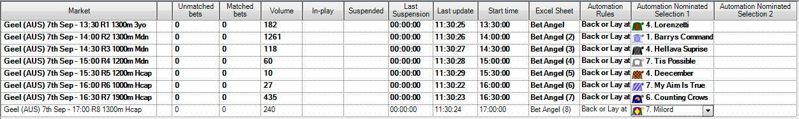

Bet Angel: Tipping automation¶
Automating a (non-ratings based) tipping strategy using Bet Angel Pro¶
We all love getting some good racing tips, but who has time to sit and place bets all day? Wouldn't it be easier if you could take those tips and get a program to automatically place the bets on your behalf?
This is what we're going to explore here - we'll be using Bet Angel Pro to place bets automatically based on a set of tips. This is my first time using Bet Angel for this approach, and am very open to any thoughts about more effecitve ways of implementing this sort of strategy. You're welcome to reach out to me on bdp@betfair.com.au with your feedback and opinions.
Lets Go!¶
- The plan¶
I have a set of tips that I've taken from our DataScientists' Racing Prediction Model, but this approach should work for any set of tips have. My goal is to create an automated process which will let me choose my tips for the day, then walk away and the the program do the leg work.
Here I'll step through how I went about getting Bet Angel Pro to place bets on the favourite runner identified by Betfair's DataScientists. There are no ratings associated wtih these tips, so I'm happy to take Betfair's Starting Price instead of a price for these bets. Bet Angel Pro's 'Guardian' feature has the capacity to let you create rules that can then be applied to specific selections, which is how we're going to implement this strategy.

After digging around on Bet Angel's forum and blog, I found an article on how to create a generic automation rule, which I found useful in helping me learn how to use the tool to automate these tips. I also found a rule that someone else had written to back or lay a selection at BSP, which is what I used as the basis for the rule I'm using here.
If you want to follow along and try this approach yourself you'll need to download Bet Angel Pro and sign up for either a subscription or at least a test period. They have a 14 day free trial that's valuable for establishing whether this tool will do what you want it to for your specific strategy.
Resources
- Set up¶
First up we need to make sure we've downloaded and installed Bet Angel Pro, and signed in.
Once you open the program up click on the 'G' Guardian icon and open the Guardian functionality up.

I've created an automated rule that you can download here, roughly based on the one discussed in this forum post (note: you will need to create a Bet Angel forum account to be able to download the rule).
- Writing your rules¶
- open up the 'Automation' tab
- click 'import a rule'
- navigate to the rule file you just downloaded (probably in your Downloads folder by default)
- upload the rule
- click on the 'rules file name' and select the rule file you just uploaded

You can choose to change the bet stake and other parts of the rule by:
- clicking on 'edit rules file', selecting the rule you want to change (i.e. back at SP)
- click on the 'parameters' tab
- change the stake as desired

Turning off bet confirmation
Unless you want to manually confirm each individual bet placed (which you definitely might want to leave turned on until you feel comfortable that the program and strategy are behaving as you expect) you'll need to go into the 'Settings' tab on the main Bet Angel Pro program, click 'Edit settings', go to the 'Behaviour' tab, and remove the tick at the top next to 'Confirm Bets?'.
You can then save these settings, but you'll need to go into the settings tab and choose the saved file each time you open the program.
- Selecting your markets¶
I decided I only wanted to bet on the gallops races at Geelong, so I used the markets menu to navigate to Geelong, then multi-slected all the win markets by holding down the control key and clicking on each win market.
If you wanted to include all horse or greyhound races for a day you could use the 'quick picks' tab.
Once you've chosen the races you're interested in click the 'add' button and you'll see them appear in the main body of the screen.

- Choosing your selections¶
The final step is to choose which selections you want to bet on. In this example I just chose the number 1 selection chosen by the Data Scientists in their Racing Prediction Model. Just click on the dropdown in the 'Automation Nomination Selection 1' column for each race and choose your selection.
Back and lay bets:
- The runner selected in 'Automation Nomination Selection 1' will have a BSP back bet for your chosen stake placed.
- The runner selected in 'Automation Nomination Selection 2' will have a BSP lay bet for your chosen stake placed.

Changing the rules
This approach only allows you to back one runner and lay one runner per race. If your strategy bets on multiple runners per race you can edit the rules file, select 'copy rule', then edit the second rule to use the runner selected in 'Automation Nomination Selection 2 and delete the lay strategy.
The beauty of this tool is that you can customise the rules until you have a set that do what you want them to.

And you're set!¶
Once you've set your rules up and got comfortable using Bet Angel Pro it should only take number of seconds to load the markets up and choose your selections for the day.
Note:
you will need to leave your computer up and running for the duration of the chosen markets, as the program needs the computer to be 'awake' to be able to run.
What next?¶
We're working through some of the popular automation tools and creating articles like this one to help you learn how to use them to implement different styles of strategies. If you have any thoughts or feedback on this article or other programs you'd like to see us explore please reach out to bdp@betfair.com.au
Disclaimer¶
Note that whilst automated strategies are fun and rewarding to create, we can't promise that your betting strategy will be profitable. If you're implementing your own strategies please gamble responsibly and note that you are responsible for any winnings/losses incurred.